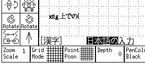
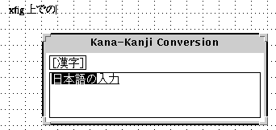

Internationalization (Using Japanese, Korean, etc.)
Xfig and fig2dev can produce PostScript, EPS, PDF and bitmap files
that contain Japanese or Korean text. For this to work, fig2dev must be
invoked from the command line. Also, it is necessary to have a postscript
preamble file, e.g., japanese.ps, in its default location, usually
/usr/local/share/fig2dev/i18n or /usr/share/fig2dev/i18n.
Such preamble files might also be put into the location pointed to by the
FIG2DEV_LIBDIR environment variable.
The file japanese.ps and korean.ps define composite fonts to
use with Times-Roman and Times-Roman Bold.
From xfig, save your drawing using Save As… from the
File menu.
Xfig invariably writes utf-8 encoded fig files.
You must convert the file to an EUC-encoding, e.g., with iconv
iconv -f UTF-8 -t EUC-JP drawing_utf8.fig >drawing.fig
Use fig2dev to convert the resulting, euc-encoded fig file (drawing.fig)
to the desired output format. You must work in the corresponding EUC-locale
(setting the environment
variable LC_CTYPE, or simply LANG), and you must specify
the options -E for input encoding
and -j to enable composite fonts. For instance, to convert to EPS,
LC_CTYPE=ja_JP.eucJP fig2dev -L eps -E EUC-JP -j drawing.fig drawing.eps
or to a PNG,
LC_CTYPE=ja_JP.eucJP fig2dev -L png -E EUC-JP -j drawing.fig drawing.png
Using this internationalization facility,
you may enter text in Japanese or some another languages
(henceforce, call "international text")
with the TEXT facility.
When entering international text,
"Times-Roman" or "Times-Bold"
(may be displayed as "Times-Roman + Mincho"
and "Times-Bold + Gothic" in Japanese environment)
must be selected as TEXT FONT.
Input of international text will be started
by typing a key to switch the input mode
when it is ready to input text from the keyboard
in TEXT mode.
It depend on the environment as to which key will switch the input mode,
but keys such as Shift-SPACE, Control-SPACE,
Control-O, or Control-\ may be used in many cases.
Operations for conversion also depend on the environment,
but will be the same as other applications which use the environment.
The input style may be selected from
Off the Spot, Over the Spot, and Root.
The input style to be used
may be selected with the inputStyle resource
or the -inputStyle option.
For example, xfig -inputStyle OverTheSpot
will select Over the Spot as the input style.
- Off the Spot:
- The text under conversion will be displayed at the bottom of the canvas.

- Over the Spot:
- The text under conversion will be displayed at the position
where it will end up.
But the display may be somewhat strange
because it will be displayed with a different font.
Also, it may lead to somewhat unusual behavior,
or the display on the canvas may get confused.
![[Input Style: Over-the-Spot]](images/xim-over-the-spot.png)
- Root:
- The text under conversion will displayed in a separate window.

Fonts used when generating PostScript output are specified
in the files like japanese.ps in fig2dev package,
and it is possible to change them by modifying those files.
Japanese
By default, Ryumin-Light and GothicBBB-Medium
will used if they are available,
and HeiseiMin-W3 and HeiseiKakuGo-W5 otherwise.
Locale name can one of japanese, ja, ja_JP,
ja_JP.ujis, ja_JP.eucJP and ja_JP.EUC.
Korean
By default, Munhwa-Regular and MunhwaGothic-Bold
will used if they are available,
and HLaTeX-Myoungjo-Regular and HLaTeX-Gothic-Regular otherwise.
Locale name can one of korean, ko, ko_KR,
ko_KR.ujis, ko_KR.eucKR and ko_KR.EUC.
Another Languages
Because configuration file for languages other than Japanese and Korean
is not prepared,
you must make the file for the language and available fonts.
The file must installed into the directory
specified when fig2dev is installed.
The filename must locale name followed by ".ps".
For example, if locale name is zh_CN.eucCN,
the filename must zh_CN.eucCN.ps.
X Window System has mechanism to load locale-specific resource file
to support internationalization (localization) of applications.
With this mechanism, it is possible to make suitable settings for the language
without specifying options when executing the application.
To make xfig works properly for multiple languages,
it may be necessary to make suitable settings using this mechanism.
In the default configuration of X11R6, if there is a resource file like
/usr/X11R6/lib/X11/locale/app-defaults/Fig
(here, locale is locale name or its "language part"),
it will be loaded instead of
/usr/X11R6/lib/X11/app-defaults/Fig.
Therefore, if you wrote setting for Japanese environment in
/usr/X11R6/lib/X11/ja/app-defaults/Fig,
the setting for Japanese environment will be used when
environment variable LANG is set to ja_JP.eucJP or so,
and default setting in /usr/X11R6/lib/X11/app-defaults/Fig
will be used otherwise.
- When entering international text, you must select
"Times-Roman" or "Times-Bold"
(may be displayed as "Times-Roman + Mincho"
and "Times-Bold + Gothic" in Japanese environment)
as the TEXT FONT.
If any other font is selected,
Latin-1 characters
will be available as in normal xfig.
- In Japanese environments,
text may include only ASCII and JIS-X-0208 characters.
If the environment supports it,
it may be possible to enter characters
of JIS-X-0201 kana characters
or JIS-X-0212 (supplement kanji),
but fig2dev will not accept those characters.
[ Contents |
Introduction |
Credits ]